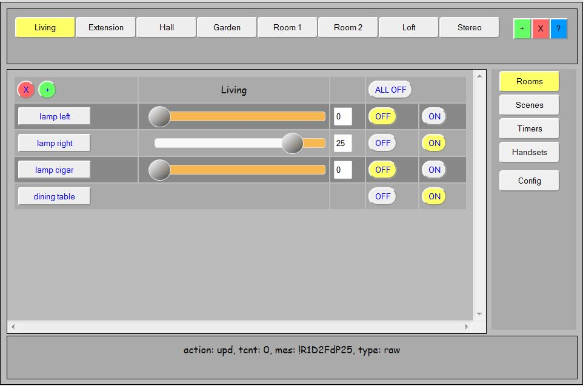

LamPI Introduction
LamPI is a Home Automation project for switching equipment in the house over 444 MHz transmitters/receivers on a RaspberryPI.
You can find its GIT repository on https://github.com/platenspeler, documentation on http://platenspeler.github.io

The screen above is one of the main screens of LamPI, and should give you a taste of what LamPI is about. As you see, the GUI interface is designed to operate (and manage) all tasks for the connected devices and minimize the need for manual changing of configuration files etc. let alone making configuration changes at compile time.
In case I missed something, please send me an email or make a note on this page. For the moment I'm the only author of LamPI so it can take a few days before I answer...
LamPI Introduction
The goal of my project was to provide an easy interface to the family to control the lights in our house. We had klikaanklikuit.nl switches and we have an iPad (and some Android phones and Laptops) and want to control our light switches with an easy-to-use GUI interface. This meant that I needed at least 2 components: A component that would control transmitter and receiver and handle low-level device commands, and a GUI in JavaScript/jQuery that would handle the human interaction. In order to store configuration information and for timing commands and unattended use, we would also need a daemon process serving in the background as well as a database (written in MySQL) to store configuration information.
Although I woul expect that you like to use te complete package, it is quite good possible to only use the RaspberryPI transmitter and receiver shell executables (see below)
<More information is available HERE>
Main LamPI Functions
LamPI contains 5 main screens: Rooms, Scenes, Timers, Handsets and Config. For every screen I have assembled a few pages that contain instructions on common tasks you will perform.
The documentation for the LamPI functions can be found on this site on the following pages.
What Switches, Dimmers and other devices are supported?
LamPI can support receiver devices (making transmitter modules for various brands is often easy). Also, several brand share almost the same protocol or work or can be made to work with minor modifications, Therefore, the list below is probably just a snapshot of a much larger list...
Receivers, Switches, Dimmers
- Klikaanklikuit switches, the new type
- Action or Impuls switches
- Livolo switches
- Kopou switches
- Elro (not tested, software is installed)
- Blokker (not tested, software is installed)
- Klikaanklikuit (old model with two wheels at he back, not tested)
Handsets and Remote Controls
- Klikaanklikuit remotes
- Livolo 4-button keychain
- Kopou 4-button keychain
Temperature Sensors
What Platform(s) does LamPI run on?
- The web GUI of LamPI runs on every webserver in your network as it is implemented in Javascript/jQuery. That means that if you install it on a webserver in your network you can access the GUI User Interface from every browser in your network (and soon also from the internet). By default, the webserver runs fine on the RaspberryPI (you need the Raspberry anyway).
The current web front-end works VERY well on iPad, and can be installed as an app...
- If you want, you can setup the MySQL database on another server (that is what I did), but this is optional.
- The low-level device functions for transmitter and receiver, will at the moment only run on the RaspberryPI, although making an Arduino version is probably not much work. The executables are all found in the ~/exe directory. The source code for these functions can be found in the ~/receivers directory.
Architectural Considerations
I did make an architecture document which can be found <HERE>.
Planned Functions
Of course I'm always thinking about new functions, as long as I do not have to put the current system up-side-down too much. After all, I do have other day-time work to do and it has to make sense for me to spend additional time. Therefore, you are welcome to ask for new functions, but if it will cost me days to implement them and I will not benefit from them in any way I will probably give priority to other changes.
- Add support for Android phones. This is in beta at the moment and I use PhoneGap technology of Adobe to make such version. All Javascript/jQueryMobile code is already in the LamPI-x.y.js file, the index.html file will determine what libraries to load. I will probably publish a separate branch for Android with the same version number as its web equivalent.
- Adding new handsets at this moment still requires manual editing of the database.cfg file. I like to add more options to the OPTIONS screen for setup of new switch types and handset types, so that adding such switches and handsets at runtime is a lot easier.
- Add support for Z-Wave or Zigbee. I have not decided what is next, but as the LamPI-daemon is quite universal in its setup adding transmitter/receivers for these technologies is relatively easy.
- I like (at some time) be integrating my front-end with the new standards for Home Automation as soon as stacks become available for the Raspberry.
- And I'm always looking for cheap new designed wall switches to add to the set..
- Internationalization; Probably not worth spending too much time on this, as most people that will use this projects do not mind English versions anyway. So probably just making an alternative startup file for ''database.cfg" would be enough for international customers to get a good feel for the software.